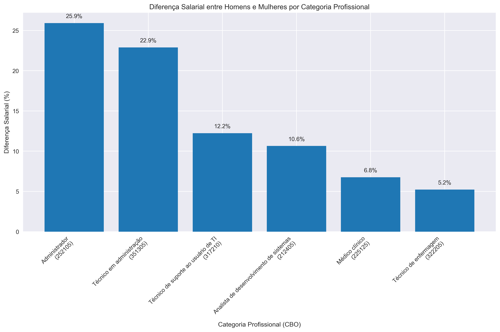
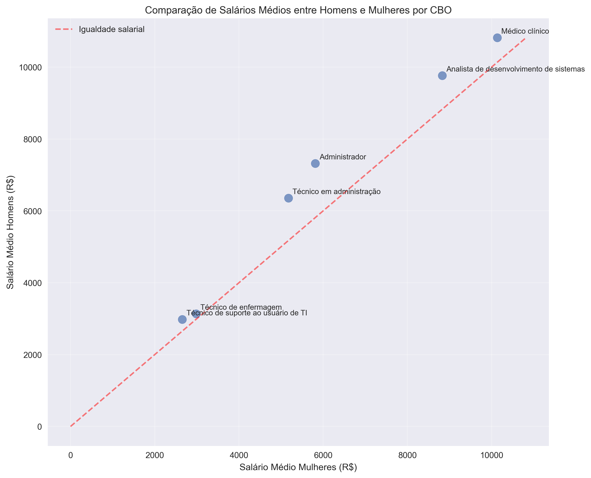
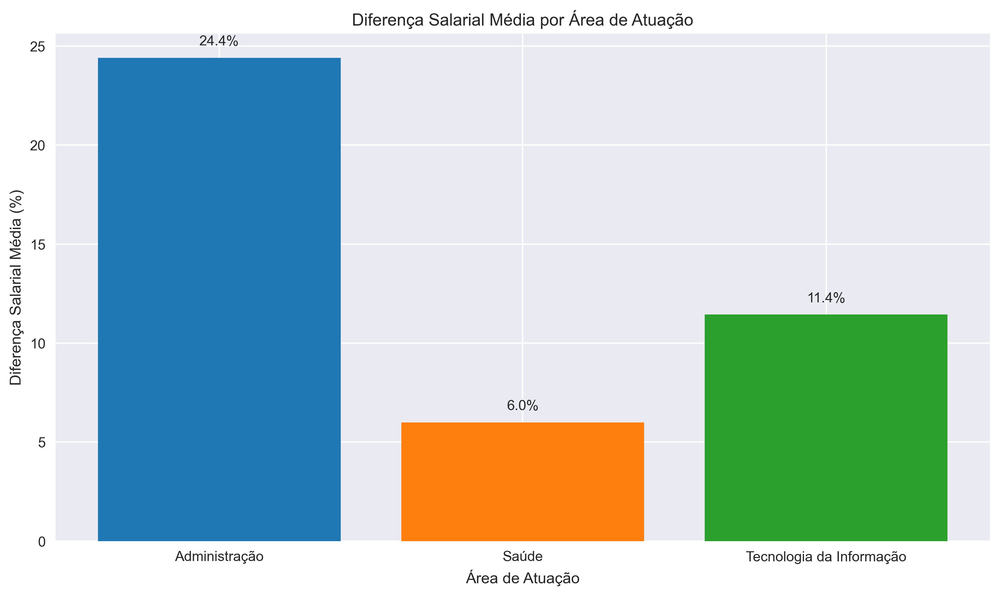
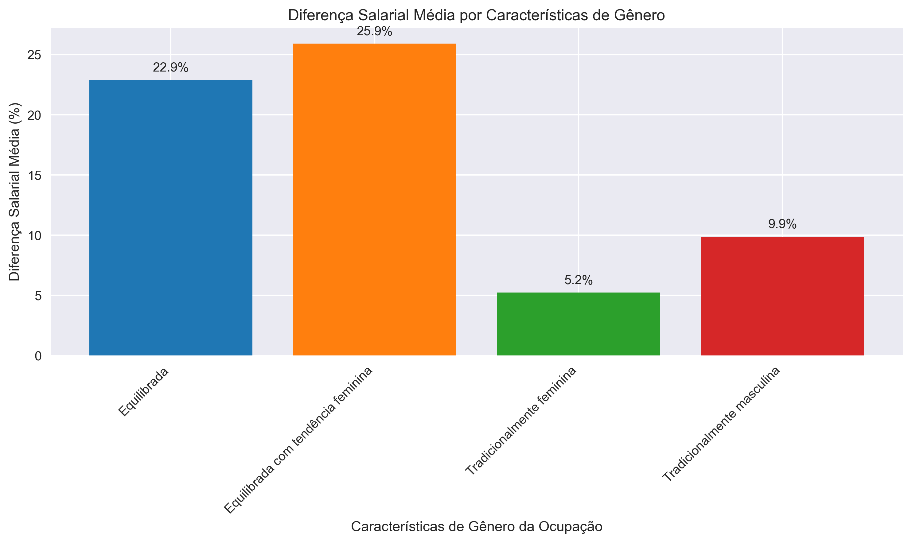

Análise de Diferenças Salariais por Categoria Profissional (CBO)
Resumo Executivo
Esta análise examina as diferenças salariais entre homens e mulheres em seis categorias profissionais específicas, utilizando dados da RAIS. O objetivo é entender como a desigualdade salarial varia entre diferentes ocupações e áreas de atuação.
Diferenças Salariais por Ocupação
| Ocupação |
Código CBO |
Salário Médio Homens |
Salário Médio Mulheres |
Diferença Salarial |
| Administrador |
252105 |
R$ 7,317.85 |
R$ 5,811.94 |
25.91% |
| Técnico em administração |
351305 |
R$ 6,357.20 |
R$ 5,173.03 |
22.89% |
| Técnico de suporte ao usuário de TI |
317210 |
R$ 2,979.33 |
R$ 2,654.62 |
12.23% |
| Analista de desenvolvimento de sistemas |
212405 |
R$ 9,766.16 |
R$ 8,826.88 |
10.64% |
| Médico clínico |
225125 |
R$ 10,818.07 |
R$ 10,133.35 |
6.76% |
| Técnico de enfermagem |
322205 |
R$ 3,137.05 |
R$ 2,981.36 |
5.22% |
Visualizações
Diferenças Salariais por CBO

Comparação de Salários Homens vs Mulheres

Diferenças Salariais por Área de Atuação

Diferenças Salariais por Características de Gênero

Conclusões Principais
- As maiores desigualdades salariais ocorrem nas áreas de administração, mesmo em ocupações consideradas equilibradas em termos de gênero.
- As menores desigualdades são encontradas nas ocupações predominantemente femininas, como o técnico de enfermagem.
- A área de saúde apresenta as menores diferenças salariais, sugerindo maior equidade de gênero nesse setor.
- A área de tecnologia mostra diferenças moderadas, com maior desigualdade nas posições operacionais.
- Existe uma correlação inversa entre a predominância feminina de uma ocupação e a diferença salarial: ocupações com maioria feminina apresentam menores desigualdades.
Recomendações
- Investigar fatores estruturais nas áreas de administração que contribuem para as altas diferenças salariais.
- Promover políticas de transparência salarial para identificar e corrigir disparidades.
- Analisar a progressão de carreira de homens e mulheres nas diferentes ocupações para entender os pontos de divergência.
- Realizar uma análise mais aprofundada com técnicas estatísticas avançadas, como a decomposição Oaxaca-Blinder.
- Considerar a realização de estudos qualitativos para complementar os achados quantitativos.